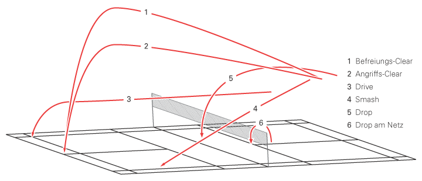
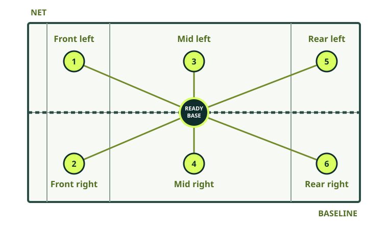

01 / A balanced game
Train more than your favourite shot
A rounded player develops technique, movement, physical ability, and experience playing points. Think of these as complementary areas: arriving balanced makes it easier to play a controlled shot, and match practice helps you decide which shot to use.
Technique
Build reliable serves and strokes, then develop accuracy, height, length, pace, and variation.
Movement
Practise split steps, first steps, balanced lunges, and recovering toward a ready position.
Physical ability
Develop coordination, stamina, strength, and mobility appropriate to your experience and needs.
Experience
Play friendly and competitive points to practise decision-making and composure under pressure.


02 / Build reliable contact
Practise the shot, then the choice
Common badminton strokes include the serve, clear, drop, smash, drive, net shot, lift, block, and push. Start at a pace where you can repeat the movement cleanly. If you have a partner, take turns feeding a consistent shuttle; solo players can shadow the swing or practise controlled serves.
- Pick one target. For example, aim for a high, deep clear or a controlled short serve.
- Repeat with quality. Use short sets and pause when your technique becomes rushed or uncomfortable.
- Add a movement. Start from a ready position, move to the shuttle, strike, and recover.
- Vary the situation. Once consistent, combine two shots or ask a partner to feed to different areas.


Shot-path key: 1 defensive clear · 2 attacking clear · 3 drive · 4 smash · 5 drop · 6 net drop.
Build the strokes in a useful order
- Start close and slow: practise a comfortable grip change, contact in front where appropriate, and a relaxed follow-through without trying to hit hard.
- Make the shuttle predictable: use self-feeds, shadow swings, or a partner’s consistent feed. Pause or reset when contact becomes rushed.
- Add one destination: aim high and deep, softly over the net, or into a broad safe target area before trying to disguise direction.
- Add movement: begin in a ready position, move to the shot, hit under control, and recover before the next feed.
- Add a choice: let the feeder vary between two known options and practise reading the shuttle before selecting the stroke.
03 / Move with control
Three no-fuss footwork drills
Six-corner shadow
From the centre, move without a shuttle to six imagined corners: front left and right, midcourt left and right, and rear left and right. Return to a balanced ready position after each move. Start slowly and keep the range comfortable.
Split step & recover
Practise a small split step, one controlled movement toward a target, then a return to the ready position. Focus on timing and balance, not speed.
Feed and recover
With a partner, use gentle feeds to one or two corners. Play a controlled return and reset. Add more directions only when the movement remains safe and tidy.

04 / A repeatable practice
Session blueprints you can adapt
These are examples, not mandatory workloads. Shorten a session when you are new, tired, returning from a break, or learning a difficult movement. Leave time to rest between quality repetitions.
Beginner court session · about 45–60 minutes
- Prepare · 8–10 minutes: easy movement, dynamic mobility that feels comfortable, controlled shadow footwork, and gentle racket contact. See the warm-up guide.
- One stroke · 10–15 minutes: use a predictable feed for an easy clear, serve, or net shot. Start close; aim for clean contact and a broad target rather than power.
- Movement · 8–12 minutes: shadow two or three court corners with a reset between repetitions. Stop while balance and coordination remain tidy.
- Play · 10–15 minutes: rally cooperatively or play short points with one simple goal, such as a legal serve or recovering after each shot.
- Finish · 3–5 minutes: easy movement, comfortable fluids, and a brief note about what to repeat next time.
Short practice · about 25–30 minutes
Warm up comfortably, choose one stroke or serve, do a few high-quality sets with rests, finish with a low-pressure target game, then cool down. A short focused practice is preferable to rushing every skill into one tired session.
05 / Make smarter choices
Singles and doubles need different pictures
Singles
Recover to a position that helps you cover likely replies; it changes with your own shot. Use height and length when under pressure, then look for space when balanced. Vary clears and drops thoughtfully instead of chasing a winner on every shot.
Doubles
Talk with your partner and agree who takes the middle. A side-by-side formation is commonly used to defend; a front-and-back formation is commonly used to attack. Move together as the rally changes, avoid both reaching for the same shuttle, and practise serve and return patterns.
Serve and return
Use a legal, repeatable serve and return to a safe target. In doubles, prepare your racket, agree on the return plan, and be ready for the next shot. Deception is optional, not a foundation.
Read the rally
Watch the opponent’s contact, balance, and court position. Ask what open space exists and which reply you can play with control. Change one decision at a time and discuss patterns after a game.
Learn a full progression in the development pathway; use the rules guide to review the differences between singles and doubles.
06 / Make a realistic routine
Example weeks for different schedules
Use these as starting points, not prescriptions. Rest and lighter days are part of training. Adjust the examples to your availability, experience, health, and how you feel.
A sample beginner week
- MONSession ASkills + easy footwork
- TUERecoverRest or gentle movement
- WEDRestNo court session
- THUOptionalShort shadow practice
- FRIRestGet ready for play
- SATSession BControlled feeds + games
- SUNRecoverReview the week
Session A: easy footwork and shadow movement, then basic shots. Session B: solo skills or gentle feeds, followed by short friendly games. Optional: easy movement review and recovery.
Balance a technique session, footwork and suitable strength work, matchplay with a tactical goal, and a lighter mobility or recovery day. Do not make every session high intensity.
Coordinate technical, tactical, match, and physical sessions with a coach. Plan training load around events and include lighter sessions and full rest as appropriate.


07 / Learn from each session
Make progress visible
Choose one focus for a session, such as a more consistent serve or a quicker recovery to the centre. Afterward, write down what you practised, what improved, and what you want to revisit. This simple reflection helps you avoid repeating only the drills you already enjoy.
- Keep the goal small enough to remember during play.
- Track consistency or control before chasing speed and power.
- Review weak areas regularly and celebrate steady improvement.
- After a consistent feed, record successful contacts into a broad target, then repeat later under similar conditions.
- Ask a qualified coach for feedback when you need help with technique.